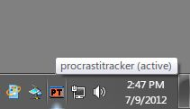
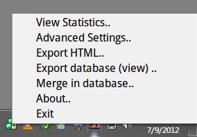
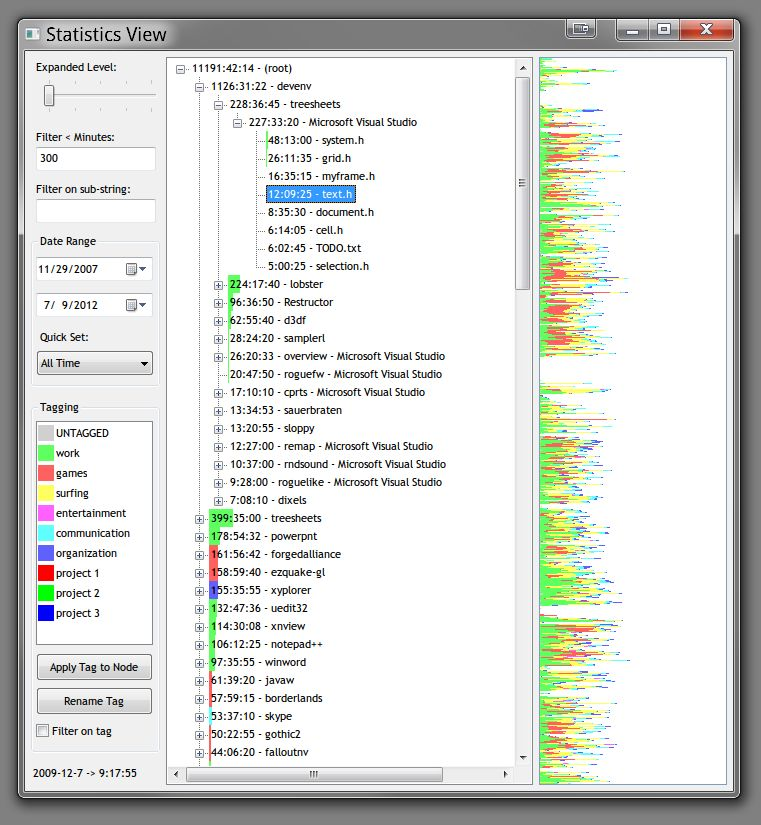
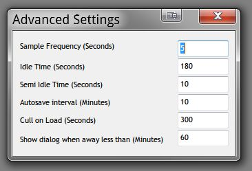

ProcrastiTracker
An open source time tracking tool for Windows
| About Features Usage Download Author |
| About | ||||||||||||||||||||||
ProcrastriTracker is an open source time tracking tool that automatically
tracks what applications and documents you use, and allows you to view statistics on
your usage in great detail.
It is written to be small and non-intrusive. It is
useful for:
|
||||||||||||||||||||||
| Features | ||||||||||||||||||||||
|
||||||||||||||||||||||
| Usage | ||||||||||||||||||||||
|
 After installing, run ProcrastiTracker from the start menu. The installer also puts a link in your "Startup" folder, so ProcrastiTracker will run automatically upon reboot. ProcrastiTracker runs in your system tray, and by defaults checks every 5 seconds what application (and document/site/title) you are using, and enters this into its database. If you haven't used the mouse/keyboard for more than 3 minutes, it stops checking (to make sure statistics are acurate when you walk away from your computer). It saves its internal database every 10 minutes, so data collection is fully automatic.

 The main tree view shows ranked in order of most use all items with total time, including sub-items. The top level are application names (from their .exe), and below that a hierarchical tree based on the window title that was active at the time (how effective this is depends on the application). Web browsers (supported: Chrome, firefox, IE and Opera) additionally have as their second level in the hierarchy the domain name of the active page, so you get your statistics grouped by site. The background of the tree view is a bar graph, where the color(s) correspond to the different tags applied to the item (if multiple different tags are used on sub items, the bar will be subdivided accordingly). To the left are filtering options, you can use the slider to quickly set how far the tree is expanded for all nodes (you can of course also do this manually per node). Use the seconds filter to not show (but still count) any items below the given seconds, this allows you to get a better overview without clutter in larger databases. Use the date range popups to see data only for a specified period (defaults to viewing the entire database). Below this is a list of "tags" you can apply to tree nodes, which allows you to group activities and get a better overview. You can apply the currently selected tag to the currently selected tree node using the button. Note how this makes the tag the default for all nodes below it too, but you can still categorize sub tree items differently (you can for example mark "firefox" as "surfing" by default, but certain sites below it you can mark as "work"). The UNTAGGED tag is special in that setting it makes the node assume whatever tag its parents uses. You can rename tags similarly to files in windows explorer: by double clicking on an already selected tag (or click the "Rename Tag" button). Check the "filter on tag" box to see stats only for the current tag (as opposed to all tags). This is useful for seeing the time spent in a particular category. HTML export (in the popup menu) works using the current seconds filtering settings (tag, date and keyword filters, but not culling/expansion filters), so be sure to set those first. Similarly, database export allows you to export part or all of the database (based on the same filtering settings), that can then later be merged elsewhere. Advanced settings can be set by opening them up from the popup:
 In most cases, there should be no need to change these. All of these setting are per database. Defaults are as per the screenshot.
Keyboard shortcuts: Pressing T tags the currently selected item with the currently selected tag (shortcut for the Apply Tag to Node button). CTRL+H hides the currently selected item in the treeview (hidden items still accumulate time etc, they are just not shown). CTRL+U unhides all hidden nodes below the selected node. Hidden items are also not exported in HTML. Merge functionality (experimental, actions cannot be undone, use at your own risk!): You can either merge in a whole database into the current database using the Merge in Database option in the popup menu (useful if you have used procrastitracker on multiple computers at once), and you can also merge individual treenodes by selecting the node you want to merge, followed by selecting the node you want to merge into, and then pressing CTRL+M. Pressing CTRL+P on a node will cause all sibling node that have it as a substring to be merger into it. In all cases, and subtrees these nodes may have will be correctly merged too. If you are unsure, first quite PT so you have a fresh backup. CTRL+C opens a manual editing mode to scale the selected leaf node by a percentage, to make corrections. Database management: the installer provides a shortcut to where all database files are stored. This allows you to restore old databases in case of an emergency (just rename the one with the date you want to "db.PT"), backup the database on other media, move the database to a new machine, delete old backups to save space, etc. |
||||||||||||||||||||||
| Download | ||||||||||||||||||||||
|
ProcrastiTracker is free and open source, enjoy! By the nature of what it does, it is not portable at all, and only runs on Windows.
|
||||||||||||||||||||||
| History | ||||||||||||||||||||||
|
||||||||||||||||||||||
| Author | ||||||||||||||||||||||
|
(c)
Wouter van Oortmerssen. I make no claims as to suitability of this application for any use, and I'm not responsable for any undesirable consequences resulting directly or indirectly from its use (including, but not limited to, unhappyness over procrastination). This application and its source code are subject to the Apache v2 license.
|